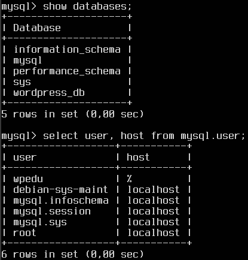

Práctica 4 Instalar y configurar Wordpress
PASO 1: Configurar el Servidor 2 (Mysql)
- Actualizar el sistema e instalar Mysql.
bash
sudo apt update && sudo apt upgrade -y
- Instalar Mysql.
bash
sudo apt install mysql-server
- Acceder a Mysql como administrador root.
bash
sudo mysql -u root
- Crear la BBDD
bash
CREATE DATABASE wordpress_db;
CREATE USER 'wp_user'@'%' IDENTIFIED BY 'tu_contraseña_segura';
GRANT ALL PRIVILEGES ON wordpress_db.* TO 'wp_user'@'%';
FLUSH PRIVILEGES;
EXIT;

- Permitiremos las conexiones remotas
bash
sudo nano /etc/mysql/mysql.conf.d/mysqld.cnf
Buscaremos la línea que contiene bind-address y la cambiaremos de 127.0.0.1 a 0.0.0.0 para permitir conexiones desde cualquier dirección IP.
- Reiniciaremos Mysql
bash
sudo systemctl restart mysql
- Abriremos el puerto Mysql (3306) en el firewall
bash
sudo ufw allow 3306
De esta forma, con un script descargamos mysql y el servidor queda listo para soportar una instalación de WordPress, con acceso remoto a la BBDD si es necesario.
** Puedes ver el script aquí
PASO 2: Instalar Apache, PHP, las extensiones necesarias y descargar e instalar Wordpress
- Instalamos Apache que será el servidor web donde se alojará Wordpress.
bash
sudo apt install apache2 -y
- Instalamos PHP y las extensiones necesarias.
bash
sudo apt update
sudo apt install apache2 \
ghostscript \
libapache2-mod-php \
php \
php-bcmath \
php-curl \
php-imagick \
php-intl \
php-json \
php-mbstring \
php-mysql \
php-xml \
php-zip
- Reiniciamos apache para que los cambios surtan efecto.
bash
sudo systemctl restart apache2.service
- Descargamos la última versión de WordPress y colocamos en la carpeta web de Apache.
bash
cd /tmp
wget https://wordpress.org/latest.tar.gz
tar -xzf latest.tar.gz
sudo mv wordpress /var/www/html/
- Cambiamos la propiedad y permisos de los archivos.
bash
sudo chown -R www-data:www-data /var/www/html/wordpress
sudo chmod -R 755 /var/www/html/wordpress
- Configurar WordPress para conectarse a la base de datos.
bash
cd /var/www/html/wordpress
- Copiamos el archivo de configuración.
bash
cp wp-config-sample.php wp-config.php
- Editamos el archivo de configuración de WordPress.
bash
sudo nano wp-config.php
- Cambia las siguientes líneas para apuntar al Servidor 2 (MySQL) en lugar de usar
localhost.
bash
define('DB_NAME', 'wordpress_db'); // Nombre de la base de datos
define('DB_USER', 'wp_user'); // Usuario de la base de datos
define('DB_PASSWORD', 'tu_contraseña_segura'); // Contraseña del usuario
define('DB_HOST', 'IP_DEL_SERVIDOR_2'); // La IP del Servidor 2 (donde está MySQL)

- Configuramos Apache para WordPress creando un archivo de configuración para el sitio de WordPress en Apache.
bash
sudo nano /etc/apache2/sites-available/wordpress.conf
- Agregamos lo siguiente:
apache
<VirtualHost *:80>
ServerAdmin admin@tu_dominio.com
DocumentRoot /var/www/html/wordpress
ServerName tu_dominio.com
<Directory /var/www/html/wordpress>
Options Indexes FollowSymLinks
AllowOverride All
Require all granted
</Directory>
ErrorLog ${APACHE_LOG_DIR}/error.log
CustomLog ${APACHE_LOG_DIR}/access.log combined
</VirtualHost>
- Luego habilitamos el nuevo sitio de WordPress y el módulo de reescritura de Apache:
bash
sudo a2ensite wordpress.conf
sudo a2enmod rewrite
- Deshabilitamos el sitio predeterminado “It Works” con:
bash
sudo a2dissite 000-default
- Reiniciamos Apache para aplicar los cambios:
bash
sudo systemctl restart apache2
Paso 3: Finalizamos la instalación de WordPress
- Abrimos el navegador: Nos dirigimos a la dirección IP del Servidor 1 en un navegador (
http://IP_DEL_SERVIDOR_1)
De esta forma con un script:
- Automatizamos la instalación de Apache, PHP y WordPress.
- Configuramos una arquitectura distribuida con la base de datos en un servidor separado, mejorando rendimiento y seguridad.
- Optimizamos los recursos al permitir un mejor uso de la CPU y memoria en cada servidor.
** Puedes ver el script aquí